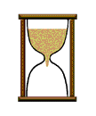

|  |
The history of the measurement of Time is indeed an interesting one. Recently I found a website that discusses this topic which is called horology (the study of time). Appropriately the website's name is called
However five years ago I wrote up this little activity about Time for my pre-algebra students. I called it appropriately:
What if we thought of one whole year as a mathematical number line? That is, what if we put the beginning of a new year at the point labelled 0, and the end of the year at the point labelled 1. Then our new calendar would look something like this:
Jan 1 Dec 31 <-|---------|---------|--------|---------|-> 0 0.5 1This sort of arrangement gives rise to a host of some very interesting questions.
A little starting help...
For #1, first multiply 365 by 0.5. The product 182.5 means that 182 full days have passed. So we need to find the hour in the 183rd day to account for the 0.5 part in that product. Adding the number of days in the first six months yields 181 (31 + 28 + 31 + 30 + 31 + 30). So Day #182 is July 1st. Now it should be clear that halfway into July 2nd (i.e. at 12 noon) is the exact moment of "0.5 of a year".
We now leave the answers to the other questions as challenges for all you students. Please submit solutions with a clear explanation of all steps and necessary calculations to your teacher. Some bonus points toward your grade will be awarded for good presentations. So get out your paper, pencil, and calculator and have a good time with Time.
***Fabulous Fifteen***
In my teaching of fractions-&-decimals, I focus a lot of attention on fifteen particularly basic items. They are 1/2, 1/4, and 3/4, for starters. Then I continue with the four 5ths (1/5, 2/5, 3/5, and 4/5), the four reduced 8ths (1/8, 3/8, 5/8, and 7/8), the two 3rds (1/3 and 2/3), and the two reduced 6ths (1/6 and 5/6).
I feel if you know these fifteen fractions and their decimal equivilents by memory, you are 'way ahead of the game and will be a better problem solver for that. (Well, it's my opinion, anyway.)
| Comments? Send e-mail. | Back to top | Go back to Home Page | Go back to Contents |